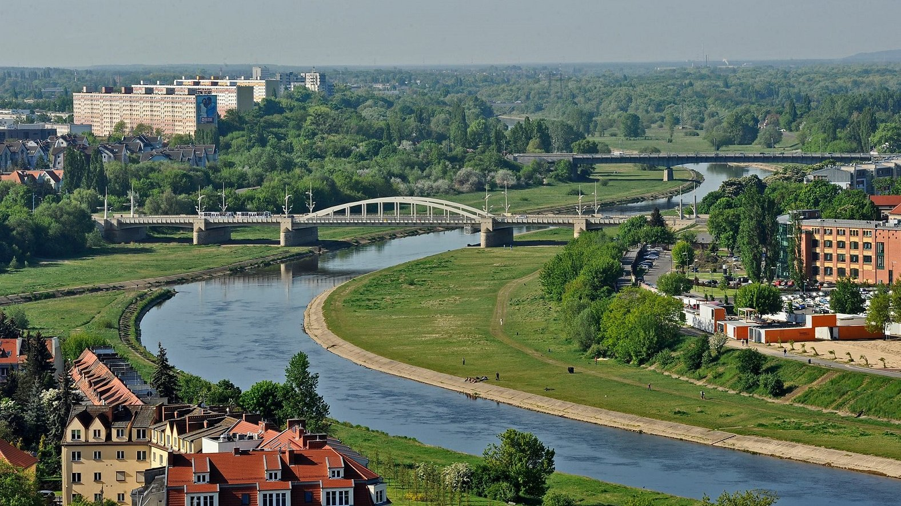
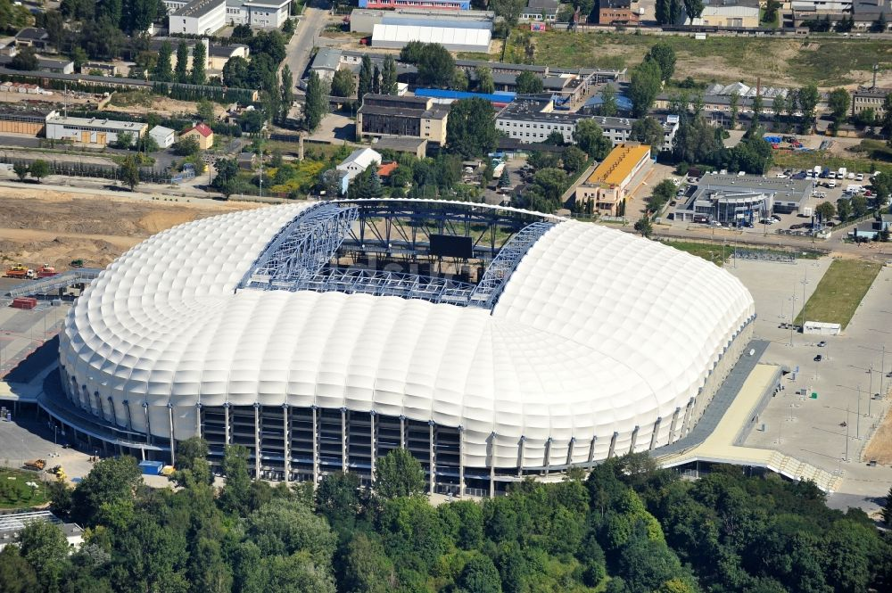
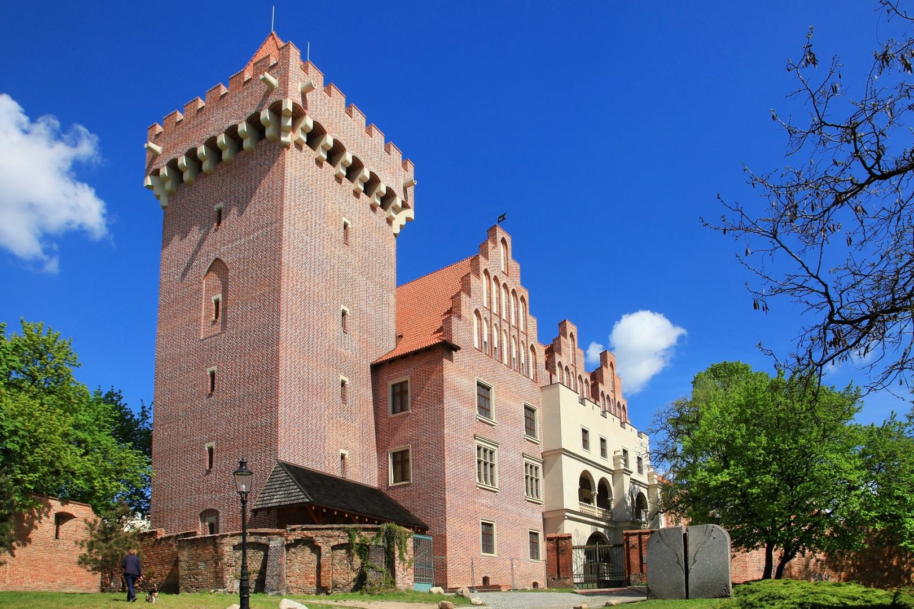

Prezentacja o mieście Poznań
Stary Rynek
Stary Rynek w Poznaniu jest jednym z najważniejszych zabytków i centralnym punktem miasta. To historyczne miejsce przyciąga turystów swoim urokiem.

Rzeka Warta
Rzeka Warta przepływa przez miasto Poznań, nadając mu niepowtarzalny charakter krajobrazowy. Jest to jedna z ważniejszych rzek w Polsce.
Jezioro Maltańskie
Jezioro Maltańskie to popularne miejsce rekreacji i rozrywki w Poznaniu. Można tutaj znaleźć m.in. plaże, park linowy oraz Ogród Zoologiczny.

Stadion Wielkopolski
Stadion Wielkopolski to jeden z największych stadionów w Polsce, mieszczący się w Poznaniu. Jest to ważne miejsce dla kibiców sportowych wydarzeń.

Zamek Królewski
Zamek Królewski w Poznaniu to historyczna twierdza położona w centrum miasta. Obecnie pełni funkcję muzeum, w którym można poznać historię regionu.
Koniec! Dziękuje za oglądanie.
Źródła:
ChatGPT 3.5 DaVinci Turbo (https://chat.openai.com/)